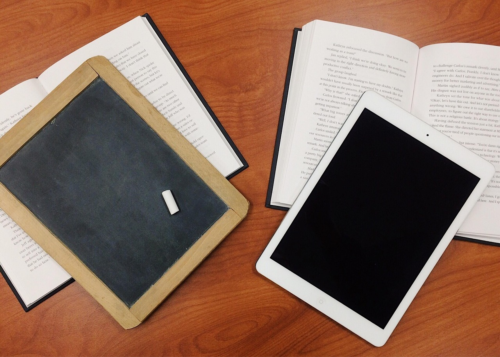

Photo: WOKANDAPIX / PixabayIn addition to activities, online courses also usually contain content. Content can be videos, text, webpages, and textbooks. While MOOCs are typically lighter in these areas than a typical online course, traditional online courses can also be light on content, while MOOCs can be heavy on content. This content can be external to the LMS platform, or hosted inside of it. Since we encourage a focus on active learning over passive consumption of content in courses, we also encourage you to consider the activities first and then add content to support those activities. However, whatever format your content takes, please realize that online course participants have come to expect high quality learning experiences (Hayes, 2015). Please make plans to have all pre-determined content completed and available to participants well before the first day of class.
Microlearning and Microcontent
Microlearning (or short bits of learning) is one type of instruction that works very well with online learning (Hug, 2010), especially with large informal online classes. Theo Hug (2010, 2012) defines microlearning as, “… [A]n abbreviated manner of expression for all sorts of short-time learning activities with microcontent” (p. 2268). Learners benefit from these shorter bursts of information rather than facing a wall of text while taking an online course. The advantage of microlearning is that students can decide what content they want to learn and just focus on that bit of information. This works well for students who are just interested in part of the content of the course, but may not be involved with the course as a whole.
To avoid cognitive load (Sweller, 1988), or loading students down with too much information all at once, consider breaking up curricular content into shorter chunks of content, or microcontent. Microlearning is the idea of taking your curriculum and grouping it in too much briefer units. Think about curriculum in terms of two main categories: text based content and multimedia based content. Multi-modal information might take the shape of audio or video, for instance, or a brief infographic or concept map (Semingson, Crosslin, & Dellinger, 2015). For instance, for audio-based learning, you can create and share micro podcasts that are one to five minutes in length. You might also consider making microcontent in the form of videos that are one to five minutes in length. The main recommendation here is to keep microlearning under five minutes in length, as described in other parts of this handbook.
For an example,see micro podcasts from Dr. Peggy Semingson on the audio platform SoundCloud.
Notice that these micro podcasts linked above are accompanied by a verbatim transcript for each micro podcast. We highly suggest that you write the transcript first and then do the recording of the micro podcast so as to avoid filler words when doing the recording. You can record micro podcasts using your mobile device with the built-in voice memo feature. Suggested platforms include SoundCloud, Audioboom, or Mixcloud. More details on this can be found in the “Creating Quality Videos” chapter later in this handbook.
Some ideas for using microlearning with assessment might include a two to three question quiz, following a bit of content such as a short video. You might also send students on a very brief web-based expedition to look for web-based content or information to share on a discussion board. The goal in this type of task is to keep time spent on learning short and brief; again, under 5 minutes is ideal.
To keep students active in their own learning, you might also consider having students create a short text-based response to a discussion prompt, or have students create a short podcast or video that is one to five minutes in length. This type of task give students agency over their own learning, yet is low stakes enough that it won’t take a lot of time to complete (in theory!). Encourage students to use their mobile device, such as a smartphone or tablet, as a way to engage with microlearning and microlearning based tasks.
Other ideas to use microlearning and create professor-authored content for a course:
- Mobile devices to create microcontent: Use your phone to take a picture of yourself to post on your LMS or CMS. You can use this for your profile picture or syllabus picture. Take pictures of landscapes in your city to include in course for a “local” look for online students to feel connected to the region. Click here for examples of such content. Then, have students do the same and post a picture of themselves, or something related to an aspect of the course content.
- Use your smartphone to record a short video to post to your course. For example: “reminder” videos (1-2 minutes) that nudge students along with assignments. Also, provide commentary on real world applications as they relate to your course content. Include these as content in your course.
Text Content
Most LMS and CMS platform have very robust tools for creating content. You can also link to external websites for content, or designate an electronic or physical textbooks. We recommend choosing websites and books that are free to use, in keeping with the general idea of openness. There are many open educational resource services that offer a wide range of books and other open materials. We highly encourage you to use these resources for your course. See the chapter on Open Educational Resources for more information.
Most online content delivery platforms are linear in their presentation of content, so keep that in mind when designing content. Leaving the flow of content to skip around to another section can be difficult for some learners, so plan to keep all content and activities in a linear path as much as possible. This will come in handy when breaking large sections of content into manageable chunks. While you can have all content on one long page, scrolling down through that content can introduce scroll fatigue, causing your participants to lose focus (Gobet et al, 2001). Take advantage of the linear paradigm to create several smaller chunks of text intermingled with activities to help your participants engage more with the material.
However, don’t forget that you have the entire World Wide Web at your disposal, full of information and ideas. Why not send your participants out there to find the content for themselves and share it with one another through discussion forums or blog posts? Or you could even create more advanced learner-centered course structures to allow learners to map their own learning pathway. See the chapter on “Advanced Course Design” for more ideas in this area. Even though it can be helpful to many learners to keep your course linear, you can always encourage some learners to take a non-linear approach to learning if they find that helpful.
Video Content
Most online courses contain some portion of video content. Some even deliver all content though videos. We recommend having at least a few videos in your course. This will help your learners connect with you in ways they can’t through text alone. We have a few recommendations for video content in courses:
- Quality: Please keep video quality in mind, even in MOOCs. Even though MOOCs are free, learners are expecting high quality (Hayes, 2015). Low quality videos can cause some participants to drop out. You will need to find a way to utilize a high quality production facility, with professional quality microphones and cameras, as well as a monitor for displaying your script. And yes, you will need to use a script (see the chapter on video production for the reasons why even the best lecturers need to use a script).
- Length: Most people can only watch about 5-10 minutes in one setting. We recommend keeping each video around 3-6 minutes long (Guo, Kim, & Rubin, 2014). If you need more time than that, then please consider breaking the content into multiple parts.
- Total Amount of Videos: This is an important consideration in MOOCs, but can also serve as a good guide for any course as well. Most MOOC participants are taking a MOOC in their limited spare time. If there are too many videos, even if they are less than 10 minutes long, learners will be tempted drop out. Remember that any one MOOC cannot substitute for a full college course. Learners will not be able to watch 1-3 hours of video in any given week. We recommend the weekly video limit being 30 minutes or less (Guo, Kim, & Rubin, 2014). For traditional online courses, there can be more video, but please remember to not overload your learners with more than they can handle in a given week.
- Captioning: Learners with accessibility issues as well as those who do not speak the language that your course is delivered in must have captions and transcripts. These must be timed and downloadable. Additionally, any PowerPoints or handouts covered in the video should be available for download.
Hosting Video Content
Some LMS and CMS platforms will have options for hosting video content. Some will even have very specific requirements for offering video content. Others will not actually host videos, so you will need to use other services for hosting any videos you create. A few general tips on hosting videos:
- Open Video Hosting Service: In keeping with principles of openness, we generally recommend hosting your videos as much as possible on open platforms such as YouTube, Vimeo, or other options. You will need to have an account with this service to host the videos you create. Once you upload your videos to your account, you can embed the videos into your LMS/CMS platform. Many of these platforms, such as Blackboard, EdX, and WordPress, support native YouTube embedding. Other services like Vimeo are not supported by all platforms, so be sure to check with both your LMS/CMS platform and the video hosting service you offer.
- Video Downloads: Some students have bandwidth limits or accessibility issues that makes video streaming difficult. Allowing your learners to download videos to watch later can help. This is optional, but highly recommended. Some video hosting services allow this, others do not. If not, you will need a website or other file hosting system that allows file storage and download. You will want to use a standard video format like MP4 if so.
- Transcriptions: These are often required by law in many places where your students will be taking your course, so please plan to provide transcriptions. This would be in addition to captioning your videos (see the chapter on video creation). Not all platforms allow this, while others allow transcriptions but require specific formats. For instance, the edX platform uses SRT files to provide captions and transcriptions. If available, we also recommend turning on the option that allows the transcript to be downloaded, as this will help more students with access issues. If not available, then we recommend uploading the transcript as separate file and adding a download link under the video.
- PowerPoints/Handouts: If you use slides or other material in your video, we also recommend uploading those so that learners can download and view while watching the video. Again, this helps some learners with accessibility issues.
Diversity in Content and Videos
Keep in mind that all content in video or text format will express a point of view that is based in the context of the people that created the content. This is not necessarily a bad thing, but it may cause some confusion for those that come from a different social or cultural context (often referred to as “sociocultural”). Everything from our ethnicity to educational level to history to geographic location to personal interests to political views and so on combine to create unique sociocultural contexts. We all exist with these various circles, and those circles have their unique norms, social cues, etc.
Because of this, it is good to keep in mind the diversity of your learners when creating content. Don’t do anything outrageous or culturally insensitive, but take the time to explain things that others may not understand. Think through issues like:
- Do all the people in my examples or graphics look like me?
- What statements or images would not make sense to those living elsewhere?
- Am I looking at all issues from all angles, or just the ones I am familiar with?
- Do I express any of my opinions as facts?
Also be aware of the external content you are choosing. Does it primarily represent one or two sociocultural contexts? How could you change that? Are there ways you can involve your learners in content creation to expand diversity? See the later section on “Diversity in Online Courses” for more information and resources on examining sociocultural influences in your course overall, including the content.
Locating Open Educational Resources
Before diving into creating course content yourself, consider looking for content that has been created by others and shared openly for others to re-use. This type of content – whether it is text, images, videos, audio, books, or any kind of media – is commonly called “Open Educational Resources” (OER). The creator of that media has shared that media via permissions that allow you to use them in your course. In many cases, you are even free to re-mix and modify these resources as you see fit. Not finding the perfect text or video for a particular topic? Look into OER to see if you can mix together something that is a better fix.
Where do you find OER? You can usually search typical websites like Google, Flickr, YouTube, and other websites for open content (typically licensed under a Creative Commons license rather than traditional copyright). For a more in depth look at how to search for open text images, video, and audio content, see this guide:
Interested in creating your own OER? See the next chapter on Open Educational Resources for more details on licensing and open options.
References
Gobet, F., Lane, P. C., Croker, S., Cheng, P. C., Jones, G., Oliver, I., & Pine, J. M. (2001). Chunking mechanisms in human learning. Trends in cognitive sciences, 5(6), 236-243.
Guo, P. J., Kim, J., & Rubin, R. (2014, March). How video production affects student engagement: An empirical study of mooc videos. In Proceedings of the first ACM conference on Learning@ scale conference (pp. 41-50). ACM.
Hayes, S. (2015). MOOCs and Quality: A review of the recent literature. Retrieved from http://eprints.aston.ac.uk/26604/1/MOOCs_and_quality_a_review_of_the_recent_literature.pdf
Hug, T. (2010). Mobile learning as ‘Microlearning’: Conceptual considerations towards enhancements of didactic thinking. International Journal of Mobile and Blended Learning,2(4), 47-57
Hug, T. (2012): Microlearning. In Seel, Norbert M. (Ed.): Encyclopedia of the sciences of learning (Vol. 5, pp. 2268-2271), New York, NY: Springer.
Semingson, P., Crosslin, M. & Dellinger, J. (2015). Microlearning as a tool to engage students in online and blended learning. In D. Rutledge & D. Slykhuis (Eds.), Proceedings of Society for Information Technology & Teacher Education International Conference 2015 (pp. 474-479). Chesapeake, VA: Association for the Advancement of Computing in Education (AACE).
Sweller, J., Cognitive load during problem solving: Effects on learning, Cognitive Science, 12, 257-285 (1988).